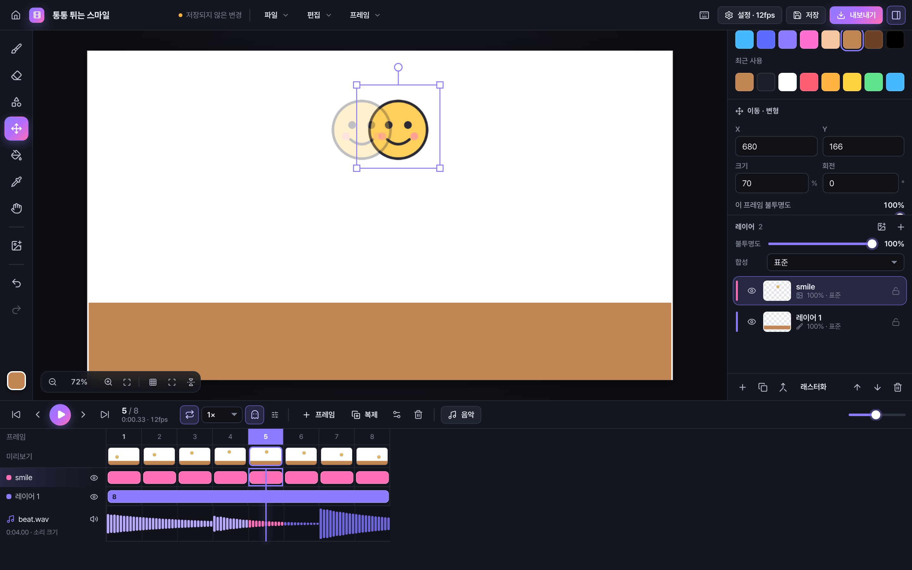
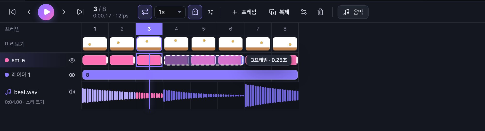
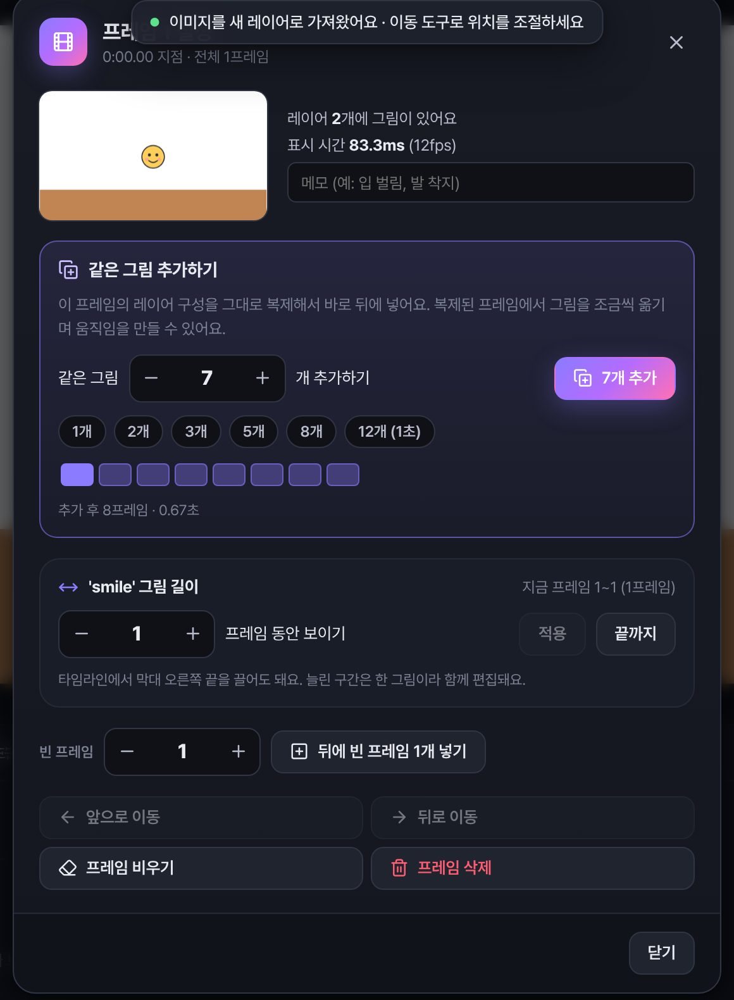
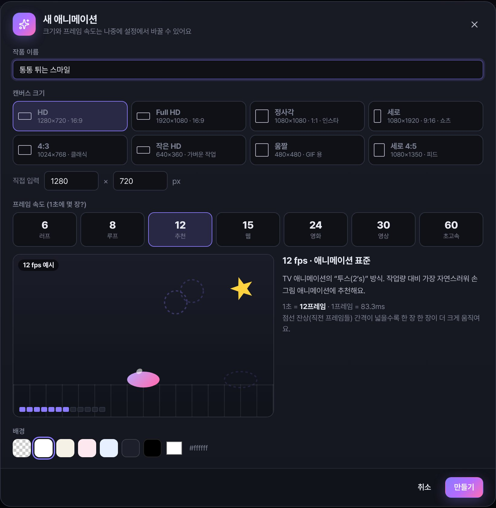
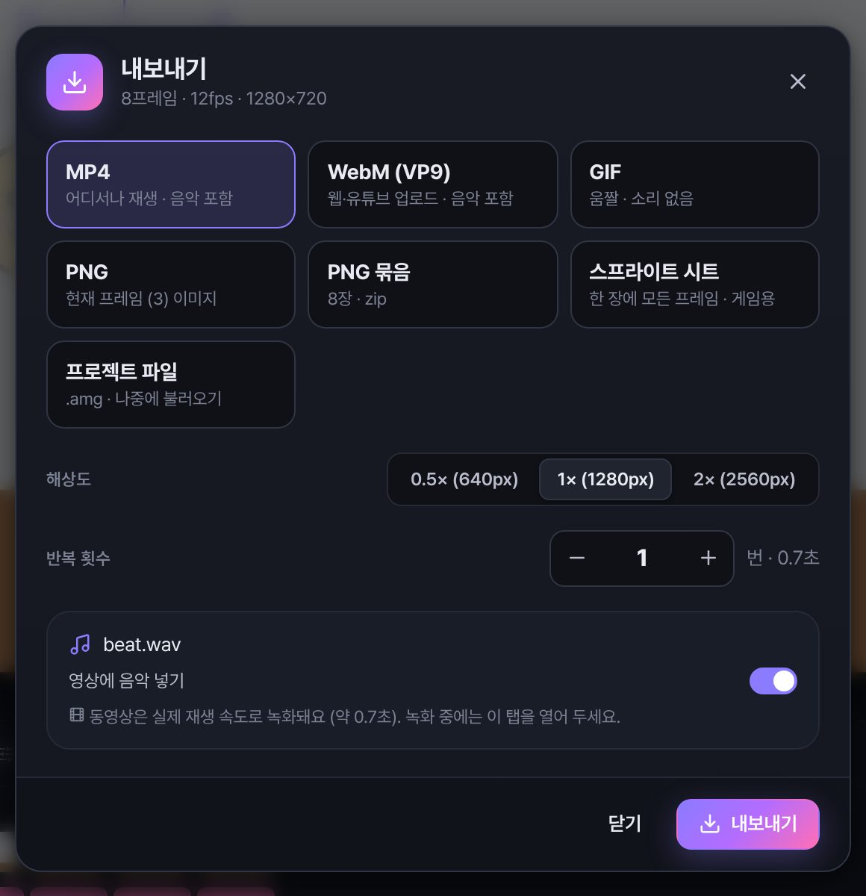
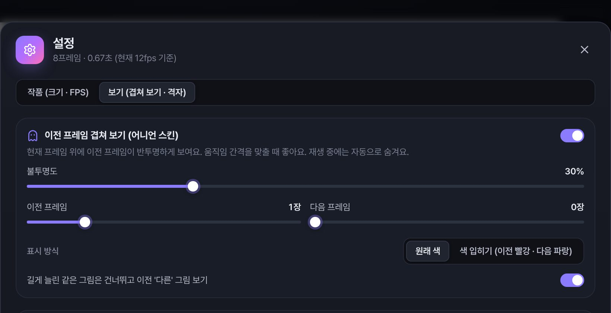

프레임 속도를 영상으로 보고 골라요
“12fps가 뭐지?” 고민할 필요 없이, 숫자를 누르면 그 속도로 움직이는 예시 영상이 바로 나와요.
누구나 쉽게 만들 수 있는
초보자들을 위한 애니메이션 툴
그림을 그리거나 붙여넣고, 같은 그림을 복제해서 조금씩 옮기면 끝.
어려운 용어와 복잡한 메뉴 없이 오늘 첫 애니메이션을 완성하세요.
Windows 10/11 · macOS (Apple Silicon) · 회원가입 필요 없음

처음 해 보는 사람에게 애니메이션 프로그램은 너무 어려웠어요. 메뉴는 수백 개, 용어는 낯설고, 한 장 그리고 나면 다음 장은 어떻게 만드는지부터 막혔죠. 그래서 직접 만들었습니다. 이름 그대로 애니 만들기 힘들어서 직접 만든 툴, AMG예요.
설명서를 읽지 않아도 돼요. 화면에 보이는 버튼만 누르면 됩니다.
브러시로 그리거나, 인터넷·다른 앱의 그림을 Ctrl+V로 붙여넣어요.
프레임을 두 번 누르고 “같은 그림 ( )개 추가하기”. 레이어가 그대로 복제돼요.
프레임마다 그림을 살짝 옮기거나 돌려요. 이전 프레임이 반투명하게 보여서 간격 맞추기가 쉬워요.
음악을 넣어 타이밍을 맞추고, 음악까지 들어간 MP4 동영상으로 저장하면 끝!
전문가용 툴은 너무 어렵고, 휴대폰 앱은 화면이 작고 광고가 많아서 아쉬웠던 점을 채웠어요.
“12fps가 뭐지?” 고민할 필요 없이, 숫자를 누르면 그 속도로 움직이는 예시 영상이 바로 나와요.
복사·붙여넣기를 반복할 필요 없어요. 원하는 개수만큼 한 번에 복제하고 조금씩 옮기면 돼요.
한 그림을 몇 프레임 동안 보여 줄지 타임라인 막대를 늘리기만 하면 돼요. 뒤 그림은 자동으로 밀려나요.
‘어니언 스킨’이라는 말을 몰라도 돼요. 기본으로 켜져 있고, 설정에서 끄거나 진하기를 바꿀 수 있어요.
사진·캐릭터 이미지를 붙여넣어 바로 움직여요. 크기·회전을 몇 번 바꿔도 원본 화질이 그대로예요.
음악을 넣으면 타임라인 아래에 소리 크기가 보여요. 쿵! 하는 순간에 맞춰 그림을 바꿔 보세요.
화면 녹화도, 다른 편집 프로그램도 필요 없어요. 프레임 단위로 정확하게 바로 MP4·GIF로 저장해요.
설치하면 바로 시작. 인터넷이 없어도 작동하고, 작업 중에 광고가 끼어들지 않아요.
20초마다 알아서 저장하고, 저장 안 한 채 닫으려 하면 물어봐요. 날아갈 걱정 없어요.
도구는 7개뿐이고 모든 화면이 한국어예요. 처음 켜도 어디를 눌러야 할지 바로 보여요.
| AMG | 전문가용 애니메이션 툴 | 휴대폰 애니메이션 앱 | |
|---|---|---|---|
| 누구를 위해 | 처음 시작하는 사람 | 현업·숙련자 | 가볍게 즐기는 사람 |
| 익히는 데 걸리는 시간 | 몇 분 | 며칠 ~ 몇 주 | 금방 |
| 작업 화면 | PC 큰 화면 | PC 큰 화면 | 작은 휴대폰 화면 |
| 가격 | 무료 | 유료·구독인 경우가 많음 | 무료 + 유료 기능인 경우가 많음 |
| 광고 · 회원가입 | 없음 | 앱마다 다름 | 있는 경우가 많음 |
| 음악 넣은 MP4 바로 저장 | ✓ | ✓ | 앱마다 다름 |
| FPS 예시 영상 · 같은 그림 N개 추가 | ✓ | — | — |
비교는 일반적인 경향을 정리한 것이며, 앱과 버전에 따라 다를 수 있어요.
쉽지만 장난감은 아니에요. 레이어, 투명도, 합성 모드, 펜 필압까지 제대로 지원해요.





설치 파일 하나로 끝. 회원가입도, 인터넷 연결도 필요 없어요.
아직 코드 서명 인증서가 없어서 나오는 안내예요. 추가 정보 → 실행을 누르면 설치돼요.
앱을 우클릭(Control+클릭) → 열기로 한 번 열어 주세요. 다음부터는 그냥 열려요.
네. 광고도, 유료 기능도, 회원가입도 없어요.
네! 캐릭터나 사진 이미지를 붙여넣고(Ctrl+V) 프레임마다 위치·크기·각도만 바꿔도 애니메이션이 돼요.
작업은 내 PC 안에 20초마다 자동 저장되고, 홈 화면의 “최근 작품”에 보여요. 다른 PC로 옮기거나 백업하려면 파일 메뉴 → “프로젝트 파일로 저장”으로 .amg 파일을 만들면 돼요.
MP4(H.264, 음악 포함), WebM, GIF, PNG(한 장 / 전체 묶음 zip), 게임용 스프라이트 시트로 내보낼 수 있어요.
네. 와콤 등 펜 태블릿의 필압을 인식해서 세게 누르면 굵게, 살살 누르면 가늘게 그려져요.
다운로드할 때만 필요해요. 설치한 뒤에는 인터넷 없이도 모든 기능을 쓸 수 있어요.